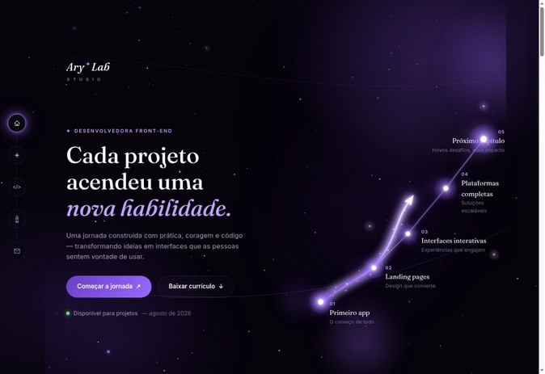

Sites
Presença profissional, responsiva e pensada para apresentar sua marca com clareza.
Quero meu site ↗✦ Design com propósito. Tecnologia com alma.
Sites, landing pages e sistemas que unem estética, estratégia e propósito para fazer seu negócio crescer.
Disponível para novos projetos

✦ Soluções AryLab
Cada projeto nasce da escuta, ganha forma com estratégia e chega ao mundo com personalidade.
Presença profissional, responsiva e pensada para apresentar sua marca com clareza.
Quero meu site ↗Páginas estratégicas que conduzem o visitante e transformam interesse em contato.
Quero converter mais ↗Soluções personalizadas para organizar, automatizar e facilitar sua rotina.
Tenho uma ideia ↗✦ Por trás do código
Fundadora da AryLab Studio, desenvolvedora Full Stack e criadora de sistemas.
Construo sites, landing pages e soluções digitais que unem estética, performance e propósito. Acredito que tecnologia também pode acolher, encantar e abrir caminhos.
✦ Projetos que ganharam forma
Experiências desenhadas para resolver problemas reais e destacar cada negócio.

Gestão de clientes, agenda e serviços para profissionais de tranças.

Presença digital elegante para valorizar técnica, beleza e autoestima.

Vitrine envolvente com foco em experiência e conversão.

Uma jornada de compra rápida, intuitiva e preparada para escalar.
✦ AryLab / Laboratório
Explore cinco etapas da minha evolução. Cada escolha abre uma experiência visual diferente.
Meu primeiro app completo: foco, hábitos e evolução em uma experiência leve.

✦ Confiança compartilhada
“A Ary entendeu a identidade do meu negócio e transformou minhas ideias em uma página linda, clara e profissional.”
“O processo foi organizado e fácil de acompanhar. O resultado ficou moderno e muito mais profissional.”
“Recebi uma solução intuitiva, bem planejada e preparada para facilitar a rotina do meu negócio.”
Vamos criar juntas?
Conte o que você deseja. Eu transformo sua necessidade em uma experiência digital bonita, funcional e estratégica.